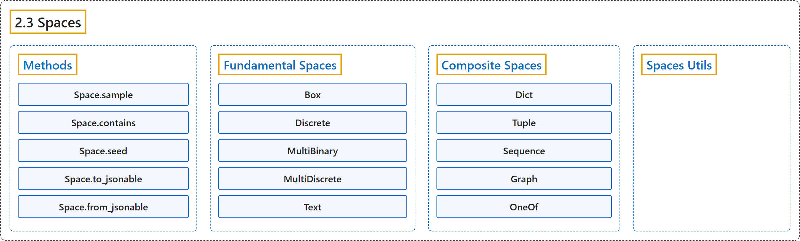

2.3 Spaces
Classification

Glossary
| Term | Definition | 中文翻译 | Source |
|---|---|---|---|
| 2.3 Spaces 空间 |
"Spaces describe mathematical sets and are used in Gym to specify valid actions and observations." | 空间描述数学上的集合，在 Gym 中用来规定合法的动作和观测。 | Farama Foundation, n.d.-c, "Spaces", para. 1 |
| Methods 方法 |
(No definition) | （无定义） | Farama Foundation, n.d.-c, "Methods" |
| Space.sample sample 方法 |
"Randomly sample an element of this space." | 从这个空间中随机采样一个元素。 | Farama Foundation, n.d.-c, "gymnasium.spaces.Space.sample", para. 1 |
| Space.contains contains 方法 |
"Return boolean specifying if x is a valid member of this space, equivalent to sample in space." | 返回布尔值，指明 x 是否为这个空间的合法成员，等价于 sample in space。 | Farama Foundation, n.d.-c, "gymnasium.spaces.Space.contains", para. 1 |
| Space.seed seed 方法 |
"Seed the pseudorandom number generator (PRNG) of this space and, if applicable, the PRNGs of subspaces." | 为这个空间的伪随机数生成器（PRNG）设置种子，如适用，也为各子空间的 PRNG 设置种子。 | Farama Foundation, n.d.-c, "gymnasium.spaces.Space.seed", para. 1 |
| Space.to_jsonable to_jsonable 方法 |
"Convert a batch of samples from this space to a JSONable data type." | 把这个空间的一批样本转换为可 JSON 序列化的数据类型。 | Farama Foundation, n.d.-c, "gymnasium.spaces.Space.to_jsonable", para. 1 |
| Space.from_jsonable from_jsonable 方法 |
"Convert a JSONable data type to a batch of samples from this space." | 把可 JSON 序列化的数据类型转换为这个空间的一批样本。 | Farama Foundation, n.d.-c, "gymnasium.spaces.Space.from_jsonable", para. 1 |
| Fundamental Spaces 基本空间 |
(No definition) | （无定义） | Farama Foundation, n.d.-b, "Fundamental Spaces" |
| Box Box（盒空间） |
"A (possibly unbounded) box in Rn." | Rn 中的一个（可能无界的）盒子。 | Farama Foundation, n.d.-b, "gymnasium.spaces.Box", para. 1 |
| Box.sample sample 方法 |
"Generates a single random sample inside the Box." | 在 Box 内部生成一个随机样本。 | Farama Foundation, n.d.-b, "gymnasium.spaces.Box.sample", para. 1 |
| Box.is_bounded is_bounded 方法 |
"Checks whether the box is bounded in some sense." | 检查盒子在某种意义上是否有界。 | Farama Foundation, n.d.-b, "gymnasium.spaces.Box.is_bounded", para. 1 |
| Discrete Discrete（离散空间） |
"A space consisting of finitely many elements." | 由有限个元素组成的空间。 | Farama Foundation, n.d.-b, "gymnasium.spaces.Discrete", para. 1 |
| Discrete.sample sample 方法 |
"Generates a single random sample from this space." | 从这个空间生成一个随机样本。 | Farama Foundation, n.d.-b, "gymnasium.spaces.Discrete.sample", para. 1 |
| MultiBinary MultiBinary（多二值空间） |
"An n-shape binary space." | 一个 n 形状的二值空间。 | Farama Foundation, n.d.-b, "gymnasium.spaces.MultiBinary", para. 1 |
| MultiBinary.sample sample 方法 |
"Generates a single random sample from this space." | 从这个空间生成一个随机样本。 | Farama Foundation, n.d.-b, "gymnasium.spaces.MultiBinary.sample", para. 1 |
| MultiDiscrete MultiDiscrete（多离散空间） |
"This represents the cartesian product of arbitrary Discrete spaces." | 它表示任意多个 Discrete 空间的笛卡尔积。 | Farama Foundation, n.d.-b, "gymnasium.spaces.MultiDiscrete", para. 1 |
| MultiDiscrete.sample sample 方法 |
"Generates a single random sample from this space." | 从这个空间生成一个随机样本。 | Farama Foundation, n.d.-b, "gymnasium.spaces.MultiDiscrete.sample", para. 1 |
| Text Text（文本空间） |
"A space representing a string comprised of characters from a given charset." | 表示由给定字符集中的字符组成的字符串的空间。 | Farama Foundation, n.d.-b, "gymnasium.spaces.Text", para. 1 |
| Text.sample sample 方法 |
"Generates a single random sample from this space with by default a random length between min_length and max_length and sampled from the charset." | 从这个空间生成一个随机样本，默认长度在 min_length 与 max_length 之间随机，字符从 charset 中采样。 | Farama Foundation, n.d.-b, "gymnasium.spaces.Text.sample", para. 1 |
| Composite Spaces 复合空间 |
(No definition) | （无定义） | Farama Foundation, n.d.-a, "Composite Spaces" |
| Dict Dict（字典空间） |
"A dictionary of Space instances." | 由 Space 实例组成的字典。 | Farama Foundation, n.d.-a, "gymnasium.spaces.Dict", para. 1 |
| Dict.sample sample 方法 |
"Generates a single random sample from this space." | 从这个空间生成一个随机样本。 | Farama Foundation, n.d.-a, "gymnasium.spaces.Dict.sample", para. 1 |
| Dict.seed seed 方法 |
"Seed the PRNG of this space and all subspaces." | 为这个空间及其所有子空间的 PRNG 设置种子。 | Farama Foundation, n.d.-a, "gymnasium.spaces.Dict.seed", para. 1 |
| Tuple Tuple（元组空间） |
"A tuple (more precisely: the cartesian product) of Space instances." | 由 Space 实例组成的元组（更准确地说，是它们的笛卡尔积）。 | Farama Foundation, n.d.-a, "gymnasium.spaces.Tuple", para. 1 |
| Tuple.sample sample 方法 |
"Generates a single random sample inside this space." | 在这个空间内部生成一个随机样本。 | Farama Foundation, n.d.-a, "gymnasium.spaces.Tuple.sample", para. 1 |
| Tuple.seed seed 方法 |
"Seed the PRNG of this space and all subspaces." | 为这个空间及其所有子空间的 PRNG 设置种子。 | Farama Foundation, n.d.-a, "gymnasium.spaces.Tuple.seed", para. 1 |
| Sequence Sequence（序列空间） |
"This space represent sets of finite-length sequences." | 这个空间表示有限长度序列的集合。 | Farama Foundation, n.d.-a, "gymnasium.spaces.Sequence", para. 1 |
| Sequence.sample sample 方法 |
"Generates a single random sample from this space." | 从这个空间生成一个随机样本。 | Farama Foundation, n.d.-a, "gymnasium.spaces.Sequence.sample", para. 1 |
| Sequence.seed seed 方法 |
"Seed the PRNG of the Sequence space and the feature space." | 为 Sequence 空间及其特征空间的 PRNG 设置种子。 | Farama Foundation, n.d.-a, "gymnasium.spaces.Sequence.seed", para. 1 |
| Graph Graph（图空间） |
"A space representing graph information as a series of nodes connected with edges according to an adjacency matrix represented as a series of edge_links." | 把图信息表示为一系列节点的空间，节点之间按邻接矩阵用边相连，邻接矩阵表示为一系列 edge_links。 | Farama Foundation, n.d.-a, "gymnasium.spaces.Graph", para. 1 |
| Graph.sample sample 方法 |
"Generates a single sample graph with num_nodes between 1 and 10 sampled from the Graph." | 生成一个样本图，从该 Graph 中采样，num_nodes 在 1 到 10 之间。 | Farama Foundation, n.d.-a, "gymnasium.spaces.Graph.sample", para. 1 |
| Graph.seed seed 方法 |
"Seeds the PRNG of this space and node / edge subspace." | 为这个空间及其节点、边子空间的 PRNG 设置种子。 | Farama Foundation, n.d.-a, "gymnasium.spaces.Graph.seed", para. 1 |
| OneOf OneOf（多选一空间） |
"An exclusive tuple (more precisely: the direct sum) of Space instances." | 由 Space 实例组成的互斥元组（更准确地说，是它们的直和）。 | Farama Foundation, n.d.-a, "gymnasium.spaces.OneOf", para. 1 |
| OneOf.sample sample 方法 |
"Generates a single random sample inside this space." | 在这个空间内部生成一个随机样本。 | Farama Foundation, n.d.-a, "gymnasium.spaces.OneOf.sample", para. 1 |
| OneOf.seed seed 方法 |
"Seed the PRNG of this space and all subspaces." | 为这个空间及其所有子空间的 PRNG 设置种子。 | Farama Foundation, n.d.-a, "gymnasium.spaces.OneOf.seed", para. 1 |
| Spaces Utils 空间工具函数 |
(No definition) | （无定义） | Farama Foundation, n.d.-d, "Spaces Utils" |
References
Farama Foundation. (n.d.-a). Composite Spaces. Gymnasium Documentation (Version 1.4.0). Retrieved October 31, 2026, from https://gymnasium.farama.org/api/spaces/composite/
Farama Foundation. (n.d.-b). Fundamental Spaces. Gymnasium Documentation (Version 1.4.0). Retrieved October 31, 2026, from https://gymnasium.farama.org/api/spaces/fundamental/
Farama Foundation. (n.d.-c). Spaces. Gymnasium Documentation (Version 1.4.0). Retrieved October 31, 2026, from https://gymnasium.farama.org/api/spaces/
Farama Foundation. (n.d.-d). Spaces Utils. Gymnasium Documentation (Version 1.4.0). Retrieved October 31, 2026, from https://gymnasium.farama.org/api/spaces/utils/